🔥 O básico
- Sem classe. A arma decide o estilo:
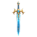
espada = Força,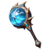
cajado = Inteligência (magia). - Monstro não dá ouro. Ouro vem de packs, vender equipamento, vender no leilão e da loja.
- Vigor é a energia do trabalho (coletar, criar, pescar, fazer pack). Máximo 100 +1 por nível. Enche sozinho com o tempo. Comida não dá vigor.
- Morrer: perde 5% do XP do nível (nunca cai de nível), as peças gastam 10 de durabilidade e você nasce no totem mais perto. Não perde ouro.
- Conserto com o ferreiro da vila. Peça gasta custa caro: 100 / 800 / 4.000 / 16.000 / 60.000 de ouro (Comum → Mítico, peça zerada).
- Raças: jogadores nascem Chama. A Geada (clãs bot) é inimiga.
Toque em qualquer foto para ampliar.
O que libera com o nível
| Nível | Libera |
|---|---|
| 1 | Fundar clã e a base do clã (seu lote vem com a base); Campos do Leste |
| 3 | Forja e banca |
| 5 | Montaria (o Lobo) |
| 8 | Pescaria; Bosque do Sul e Lago Grande |
| 10 | Evoluir peça para Raro |
| 12 | Reforçar peça (+1, +2…) e fazer pack; Fundo do Leste |
| 20 | Caverna da Montanha (o selo do fundo ainda pede o passe do Gaspar) |
| 20 / 35 / 50 | Evoluir para Épico / Lendário / Mítico |
| 27 | Terras dos Golens |
| 30 | Oeste de Vael; acima do 30, guerra com a Geada |
| 38 / 42 / 48 | Norte de Vael / Leste de Vael / Sul de Vael e o Porto |
| 40 | Alquimista (juntar catalisadores) |
| 50 | Ilha do Meio |
| 60 | Navio mercante |
| 64 / 80 / 95 | Aurora (oeste e a vila) / Leste de Aurora / Pico da Névoa |
Por enquanto o jogo está sem missões: a névoa de cada região some sozinha quando você chega no nível dela.
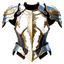
Equipamento9 peças: Capacete, Peitoral, Calça ou Short, Botas, Capa, Colar e a arma (Espada ou Cajado). Uma linha só de armadura serve para espada e magia.
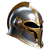
Capacete Peitoral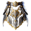
Calça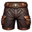
Short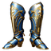
Botas Capa Colar Espada CajadoRaridades
Comum → Raro → Épico → Lendário → Mítico. Cada degrau aumenta todos os números da peça.
| Peça | O que dá |
|---|---|
| Peitoral | defesa, vida, mana |
| Capacete / Botas | defesa, vida, dano crítico |
| Calça | mais defesa e vida |
| Short | menos defesa, mais mana |
| Capa | mana e volta da mana |
| Colar | vida e % de dano |
| Espada / Cajado | dano físico / mágico e chance de crítico |
Onde conseguir
- Comerciante da vila (Rosa, na Clareira): só peça Comum (150 de ouro).
- Monstros: soltam até Raro. Bicho muito abaixo do seu nível solta menos.
- Criar (Ferreiro / Alfaiate): pode sair melhor, até Mítico. Ver Criar.
- Evoluir com catalisador. Ver Evoluir.
- Leilão: peças de outros jogadores e dos bots.
Conjunto (bônus de set)
Peças da mesma raridade (ou melhor) vestidas juntas somam bônus. O reforço não conta, só a raridade.
| 2 peças | 4 peças | 6 peças | |
|---|---|---|---|
| Raro | +15 vida, +15 mana | +1,5% crítico, +3% dano | +1,5% crítico, +3% dano |
| Mítico | +50 vida, +50 mana | +5% crítico, +10% dano | +5% crítico, +10% dano |
Os níveis somam: 6 peças Míticas = 10% de crítico e 20% de dano.
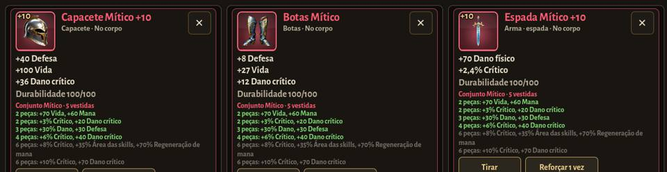
✨ Reforço (+1, +2…)
- Abra a mochila e toque na peça.
- Toque em Reforçar. Cada tentativa gasta ouro (e
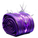
Tecido se não for arma). - Deu certo: sobe 1. Falhou: volta 1, mas nunca abaixo de +5, +10, +15… (são pontos seguros).
| Raridade | Vai até |
|---|---|
| Comum | não reforça |
| Raro | +10 |
| Épico | +20 |
| Lendário | +30 |
| Mítico | +40 |
- Chance: +1 é certo (100%), +5 ~66%, +10 ~50%, +20 ~30%, do +25 em diante 25%.
- Ganho: cada + soma 40% dos números da peça (crítico 20%).
- Atributo: do +3 em diante precisa de 10 × (nível do reforço) de Força (espada), Inteligência (cajado) ou da maior das duas (armadura).
- Tecido por tentativa (armadura): 1 até +10, 2 até +20, 3 até +30, 4 até +40.
- Peça reforçada brilha na arma (aura azul que cresce com o +).
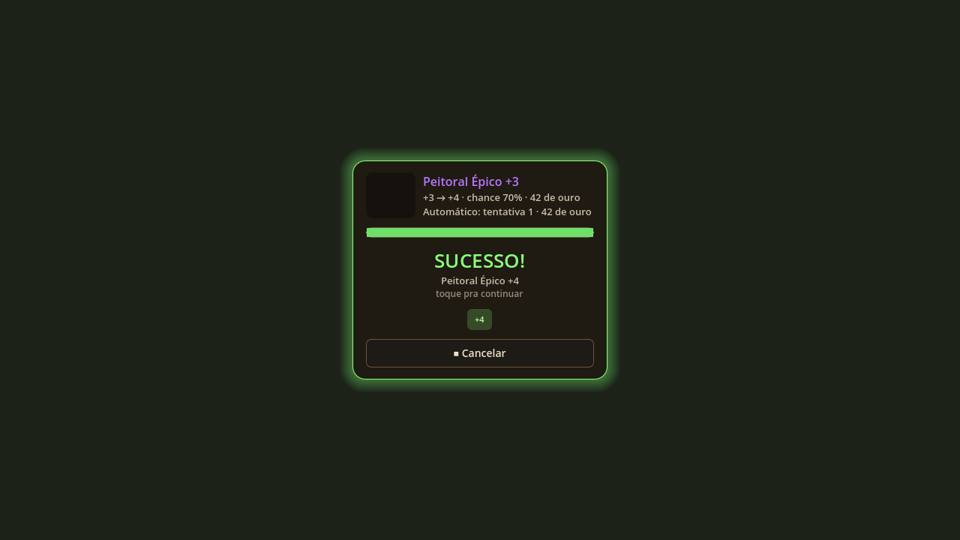
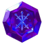
Evoluir raridade (catalisador)Runa = arma (espada, cajado). Selo = armadura e colar.
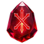
Runa Mítica Selo Raro Selo Épico Selo Lendário Selo Mítico1. Conseguir catalisador: destruir peça
Na mochila, toque numa peça que não quer e em Destruir (ou "Destruir todas"). Catalisador não cai de monstro (só de boss de mundo).
| Destruir | Dá |
|---|---|
| Comum | Barra de cobre |
| Raro | Runa/Selo Raro |
| Épico | Runa/Selo Raro + 25% de chance de 1 Épico |
| Lendário | Épico + 20% de 1 Lendário |
| Mítico | Lendário + 15% de 1 Mítico |
Normalmente sai 1; às vezes 2 ou 3; 8% de vez nada.
2. Evoluir
- Vá até uma bigorna (espada, cajado, colar, capacete, peitoral) ou bancada (calça, short, botas, capa). Toda vila tem as duas na ferraria; também vale a do seu lote na base.
- Toque na peça → Evoluir. Gasta 1 catalisador + material + 8 de vigor.
- A peça sobe 1 raridade e volta para +0.
| Para | Arma (+ Runa) | Armadura (+ Selo) |
|---|---|---|
| Raro | 4 lenha, 3 barra de cobre | 4 couro, 3 barra de cobre, 3 tecido |
| Épico | 6 lenha, 4 barra de ferro | 6 couro, 4 barra de ferro, 5 tecido |
| Lendário | 8 lenha, 5 cristal | 8 couro, 5 cristal, 8 tecido |
| Mítico | 10 lenha, 6 cristal, 2 aço | 10 couro, 6 cristal, 2 aço, 12 tecido |
- Falha: 10% / 15% / 20% / 25% (Raro → Mítico). Na falha perde catalisador e material, a peça fica. Profissão Nv 20 corta a falha pela metade.
- Sorte: 2% a 6% de pular uma raridade.
3. Alquimista (Nv 40)
A Mirela, na Vila do Rio Claro, junta catalisadores: 10 Raros + 8.000 ouro = 1 Épico; 10 Épicos + 30.000 = 1 Lendário. Mítico ela não faz.
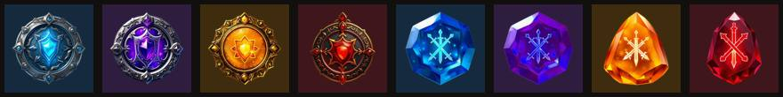
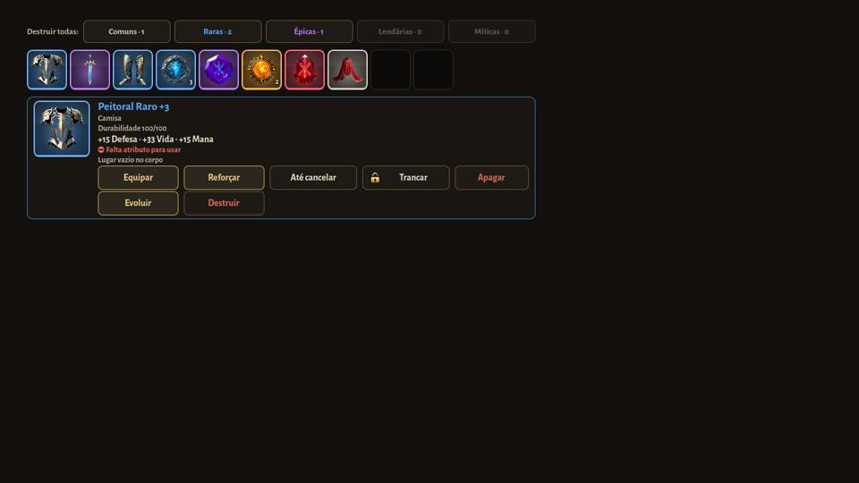
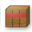
Mochila- Cada página tem 40 lugares. Começa com 1 página; compra até 4: 1.000, 5.000 e 15.000 de ouro (pelo menu, em qualquer lugar).
- Organizar junta pilhas e ordena: equipamento, consumível, Tomo, ferramenta, obra, semente, material.
- Cadeado na peça: não vende, não destrói e não vai ao leilão por engano.
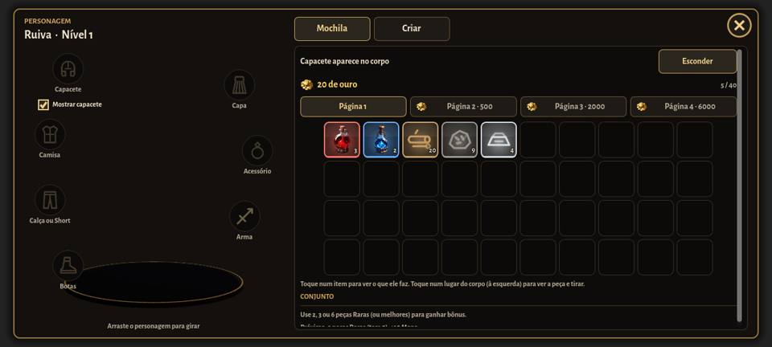
Filtros e quantidade (venda, baú e troca)
- Botões em cima: ⚔ Comum, ⚔ Raro, ⚔ Épico e
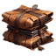
Recursos. O número mostra quantos tem. - Na venda o botão marca todos daquele tipo. No baú e na troca passa todos de uma vez.
- Janela de quantidade: − / + / Tudo. Se pedir mais que a pilha, puxa das outras pilhas iguais.
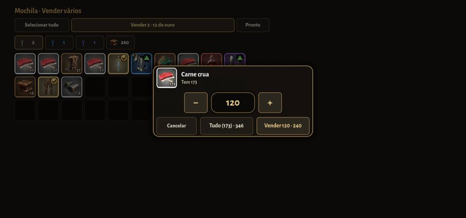
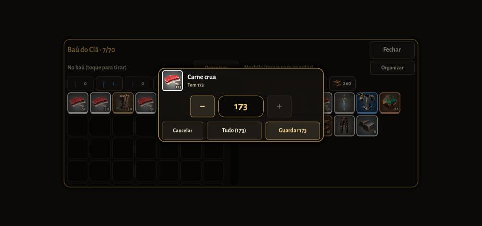
🛡️ Clã
- Fundar: menu Clã → nome (3 a 20 letras). Você vira o líder.
- Contratar: fale com o Sargento Bruno, o recrutador da Clareira. Ele mostra 3 candidatos com ficha; você escolhe 1.
- Pagar: a taxa semanal sai do cofre do clã (deposite ouro no menu Clã).
- Mandar: escolha a ordem do recruta e toque em Dar ordem.
Tipos de recruta
| Tipo | Nível dele | Contratar | Precisa clã |
|---|---|---|---|
| Recruta | Nv 1 | 150 ouro | Nv 1 |
| Veterano | metade do seu | 40 × nível dele | Nv 3 |
| Elite | igual ao seu | 80 × nível dele | Nv 5 |
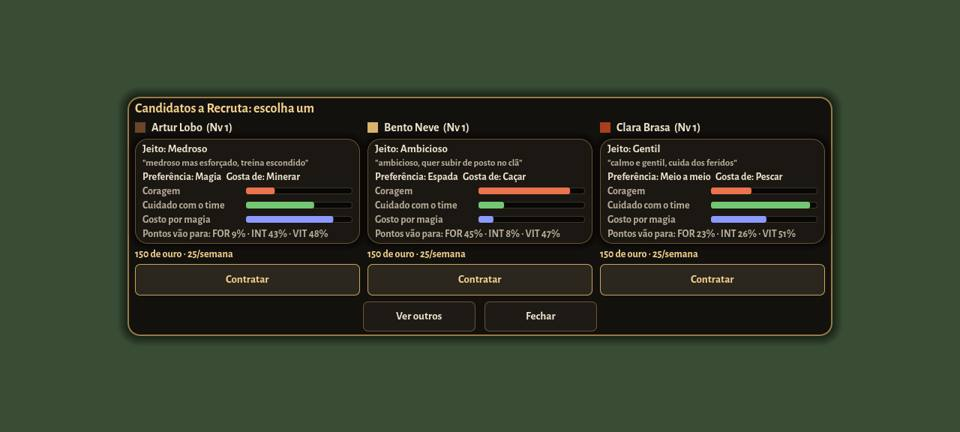
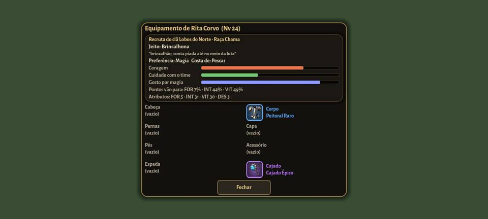
Ordens
| Ordem | O que ele faz |
|---|---|
| Livre | Cuida da própria vida (caça, coleta). |
| Me seguir | Anda com você e luta junto. Só com você no jogo. |
| Grind | Caça monstros para subir de nível. |
| Farmar recurso | Coleta o recurso escolhido e leva ao Baú do Clã (usa recall se estiver longe). |
| Proteger | Guarda você, o carrinho ou o navio mercante. |
| Fazenda | Trabalha na horta da base. |
| Plantar árvores | Planta até 10 mudas nas áreas de plantio perto da base, avisa e volta ao Livre. |
Com uma ordem ele obedece; só cuida da própria vida em Livre ou sem vigor. Com você fora do jogo, os recrutas continuam no mundo fazendo a ordem sempre que tiver alguém online no servidor. Com o servidor vazio, contam como simulação, com a mesma moral (até 12 h).
Moral (grind)
O vigor freia a coleta. A moral freia o grind. A regra vale igual online e offline, para todos os clãs.
- Grind e caça (couro, carne, tecido, fragmento): a XP, o ouro e os itens do bicho valem a moral. Com moral 80, ele ganha 80%. Com 120, ganha 120%. O mínimo é 5%. Ele nunca para de trabalhar.
- Coleta, profissão e Livre não mexem na moral e rendem igual. Quem limita é o vigor.
| Grind sozinho (começando com 100) | Moral no fim | XP naquela hora |
|---|---|---|
| 1ª hora | 85 | ~92% |
| 2ª hora | 60 | ~72% |
| 3ª hora | 25 | ~42% |
| 4ª hora | 0 | ~12% |
| Depois | 0 | 5% |
- Sobe: perto de você ou no seu time (+60 por hora, até 100), Elogiar (+10) e Jantar (+35). Só o Elogiar e o Jantar passam de 100, até 120.
- Clãs bot: o líder sai com os recrutas 2 vezes por dia, 1 hora cada vez.
- O contador da ordem mostra em verde a XP que veio a mais pela moral e em vermelho a que ele perdeu. Abaixo de 30, ele cochicha avisando que está cansado.
Subir o clã (vagas)
Nível do clã = número de vagas (máx. 10). Cada nível acima de 1 dá +2% de XP e ouro.
| Nv | Seu nível | Ouro | Material | Alma |
|---|---|---|---|---|
| 2 | 10 | 500 | 50 lenha, 30 pedra | – |
| 3 | 20 | 1.500 | 80 lenha, 30 barra de ferro | – |
| 4 | 35 | 4.000 | 30 aço, 20 couro | 40 |
| 5 | 50 | 10.000 | 40 aço, 20 cristal | 80 |
| 6 | 70 | 25.000 | 60 aço, 40 cristal | 150 |
| 7 | 80 | 50.000 | 80 aço, 60 cristal, 40 couro | 250 |
| 8 | 88 | 90.000 | 100 aço, 80 cristal, 60 couro | 400 |
| 9 | 94 | 150.000 | 130 aço, 100 cristal, 80 couro | 600 |
| 10 | 100 | 250.000 | 160 aço, 130 cristal, 100 couro | 900 |
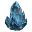
Alma = Fragmento de Alma da Geada (ver Guerra). O que falta aparece em ícones "tenho / preciso" no menu do clã.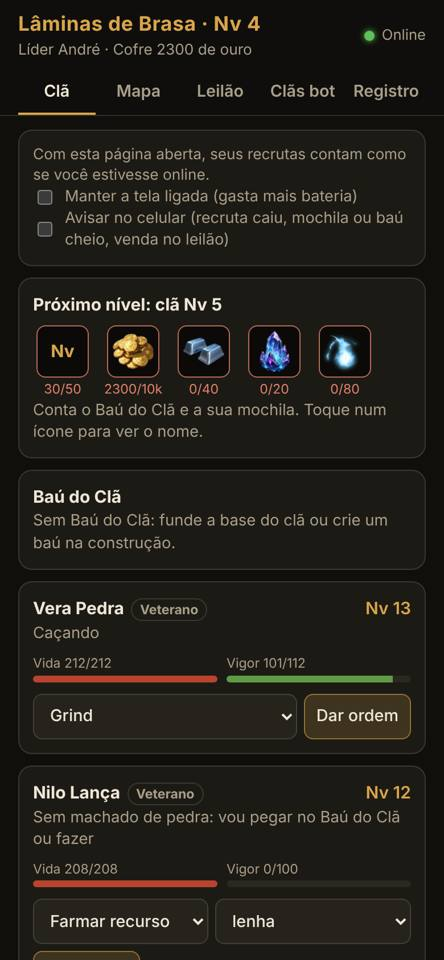
Painel do clã (fora do jogo)
Página leve no celular: dá ordens, vê mapa, Baú do Clã, mochilas e leilão (só olhar; comprar e anunciar pela aba Jogar, indo até o Otávio). Com ela aberta, os recrutas contam como se você estivesse online. Abrir o painel.
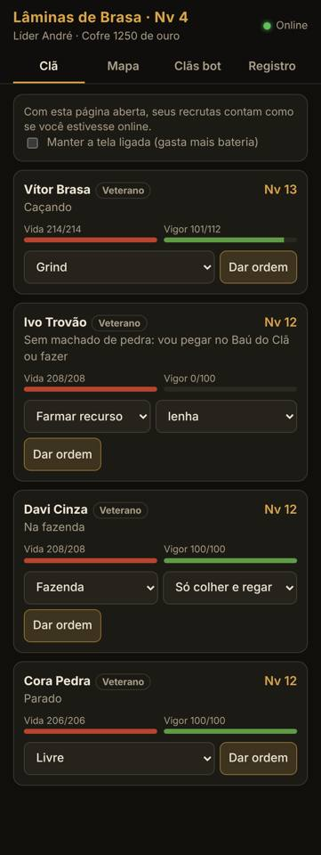
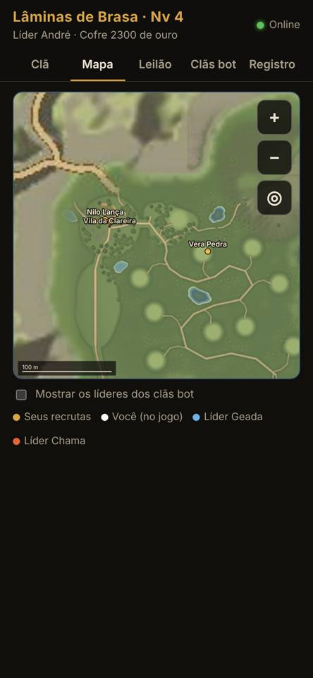
Jogar pelo painel (modo leve)
Na aba Jogar o seu herói entra no mundo de verdade, sem 3D (roda em celular fraco). Toque no mapa e ele vai a pé pela estrada, na velocidade normal; não teleporta. Os outros veem você e a Geada pode atacar. Chegando perto, dá para usar a loja (comprar e vender), o leilão do Otávio (comprar, anunciar, cancelar e retirar), o seu baú, o Baú do Clã e o totem (pago como no jogo). Abrir o jogo tira o modo leve: é o mesmo herói.
Pack pelo modo leve: perto de um mercador de pack aparece o material (tenho/preciso) e o botão Fazer pack, com a mesma barrinha e o mesmo vigor do jogo. Com o pack nas costas você anda devagar (metade da corrida). Em Lugares > Mercadores aparece quanto cada mercador paga pelo seu pack e a distância; tocando, o herói vai até lá. O carrinho também funciona: colocar, pôr e tirar packs, pôr galão, dirigir pela estrada (gasta combustível, não entra na água), descer e guardar. Se tiver bots no time, dá para mandar as ordens de Pack do time. Se você cair, o pack fica no chão.
Tela do modo leve: o mapa ocupa a tela toda (a antiga aba Mapa virou o Jogar: fora do mundo ele mostra os recrutas e, se marcar, os líderes dos clãs bot). Em cima ficam vida, mana, vigor, ouro e os botões (Parar, Montar lobo, Recall, Sair). Embaixo, a barra Perto, Mochila, Lugares e Chat: cada botão abre um painel por cima do mapa (um por vez; tocar de novo ou no ✕ fecha). O Perto ganha uma bolinha verde quando há algo perto e abre sozinho quando você chega numa loja, baú, totem ou mercador.
Lugares (modo leve): o cartão Lugares começa fechado. Tocando, aparecem as mesmas seções do mapa do jogo (Vilas e cidades, Totens, Caçada, Bosses, Dungeons, Recursos, Pescaria, Oficinas, NPCs e Mercadores); uma abre por vez. Cada linha mostra a distância (e, nos mercadores, quanto pagam pelo seu pack); tocar leva o herói até lá pela estrada. Montar no lobo também funciona, com as regras do jogo; como no "Ir para" do jogo, viagem longa já sobe no lobo sozinha (sem pack, fora de combate). O modo leve é só em pé: deitado, ele pede para girar; no tablet em pé o mapa fica ao lado dos cartões.
Recall (modo leve): o botão "Recall: base do clã" é a mesma casinha do jogo: 8 s parado e o herói aparece no Baú do Clã (sem base, na vila do começo), com a mesma recarga de 10 min. Se ele estava andando, a caminhada acaba ali. Tocar de novo durante a contagem desiste.
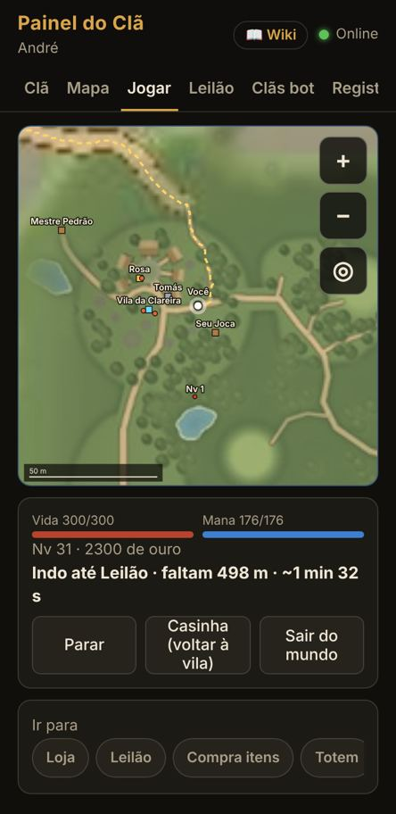
🏰 Base do clã, despensa e lenha
- O líder funda a base pelo menu Clã (Escolher o lugar da base), onde está. Precisa ser no território da Chama, longe de vila, totem, estrada, rio, veio, campo de caça e de outra base (100 m+). Mudar de lugar: 10.000 ouro, 1 vez a cada 7 dias.
- A base sobe junto com o nível do clã (até o Castelo, Nv 6). Em volta ficam os lotes de 10×10 m: o lote 1 é do líder e os outros vão para os membros. Não se compra mais terreno: o lote vem com a base.
- Dentro da base é área segura (como no totem). PvP não muda.
- Taxa semanal sai do cofre. Atrasou 2 semanas: lotes e Baú do Clã travam até pagar.
| Nv | Ganha | Taxa/semana | Lenha/semana |
|---|---|---|---|
| 1 | Salão pequeno e Baú do Clã | 300 | 20 |
| 2 | Torre de vigia | 600 | 40 |
| 3 | Paliçada | 1.200 | 70 |
| 4 | Forja do clã | 2.500 | 110 |
| 5 | Salão grande | 5.000 | 150 |
| 6 | Castelo | 9.000 | 200 |
Baú do Clã
60 lugares, de todo o clã. Recrutas em "Farmar recurso" entregam aqui. Daqui saem a comida e a lenha.
Despensa (comida)
- Cada morador come 3 rações por dia do Baú do Clã. Peixe, legume e prato contam (prato vale mais: ensopado e torta = 5 rações).
- Afeta os recrutas. Com fome: −10%. Famintos (48 h sem comer): −25%. Ninguém sai do clã.
- Bem alimentados (2 dias seguidos e 3 tipos de comida): +5% de dano e XP.
Lenha
A base gasta lenha toda semana (tabela acima). Sem lenha a base deixa de ser área segura. Os bots também precisam abastecer (e às vezes esquecem).
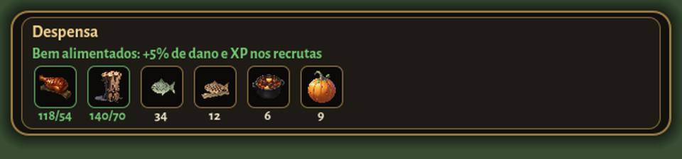
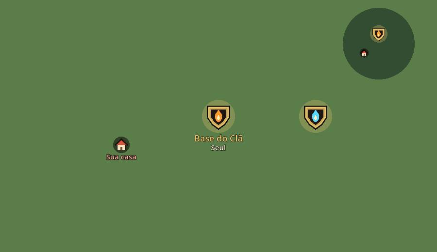
Packs (o principal jeito de ganhar ouro)
- Junte o material do pack.
- No mercador de pack daquele tipo, toque em Fazer pack (12 de vigor). Ele vai nas costas.
- Leve até outro mercador de pack, longe, e entregue. Recebe ouro.
- Nas costas: anda na metade da velocidade, não corre, não monta. Morreu: o pack cai no chão (qualquer um pega). "Largar" deixa no chão.
- Mercado cansa: o 5º pack igual no mesmo mercador paga 3% a menos a cada um (até 50%). Volta ao normal com o tempo.
- Profissão Mercador alta: pack mais barato de fazer (−15%) e paga mais (+25%).
- Pack do time: na barra do time, "Time todo" + De → Pra: os recrutas carregam do palete/carrinho/navio até o destino; o ouro vai ao cofre do clã.
Tipos de pack
| Pack | Material | Base |
|---|---|---|
| Lenha Nobre | 20 lenha | 45 |
| Pedra Lapidada | 18 pedra, 1 cristal | 60 |
| Couro Curtido | 8 couro, 2 carne | 80 |
| Temperos da Horta | 4 rabanete, 4 cenoura, 3 tomate | 85 |
| Peixe Salgado | 4 lambari, 2 tilápia, 3 pedra | 95 |
| Conservas | 5 batata, 4 milho, 2 tecido | 100 |
| Doce de Abóbora | 2 abóbora, 6 rabanete, 2 pão de milho | 130 |
| Barras de Metal | 3 barra de ferro, 3 de cobre | 140 |
| Pérolas | 3 traíra, 2 cristal, 3 tecido | 150 |
| Ervas do Pântano | 8 rabanete, 4 tecido, 2 fragmento | 160 |
| Obsidiana | 25 pedra, 3 cristal, 2 barra de ferro | 190 |
| Brasa Viva | 4 cristal, 6 carvão, 1 aço | 220 |
Veículos
| Leva | Como faz (bancada) | |
|---|---|---|
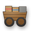 Carrinho | 2 packs (até 8 melhorando) + 1 nas costas | 30 lenha, 6 barra de ferro, 4 de cobre, 4 couro (Nv 15) |
| Barquinho | 2 pessoas, a remo | 30 lenha, 4 couro (Nv 10) |
| Navio mercante | 16 packs + 1 nas costas | 400 lenha, 40 ferro, 30 cobre, 40 couro, 40.000 ouro (Nv 60) |
- Carrinho gasta combustível:
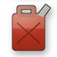
Galão (2 carvão + 1 tecido) = 160 m. Não entra na água. Quebrou: os packs caem; conserta com lenha e ferro. - Veículo fica na mochila: use na mochila para pôr no chão (barco e navio na beira da água).
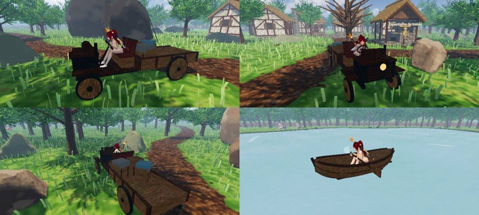
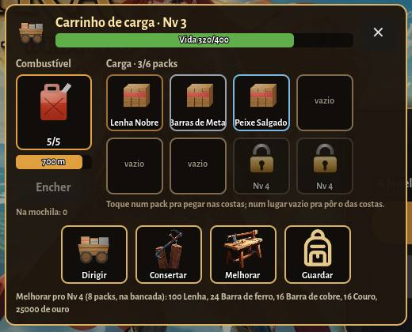
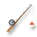
Pescaria- Faça uma Vara (3 lenha + 1 couro) no menu Criar.
- Ache um spot: círculo de ondinhas na água. Chegue na beira e toque em Pescar.
- Espere a boia afundar e toque na hora que fisgou.
- Briga: toque rápido para manter a barra cheia até puxar o peixe.
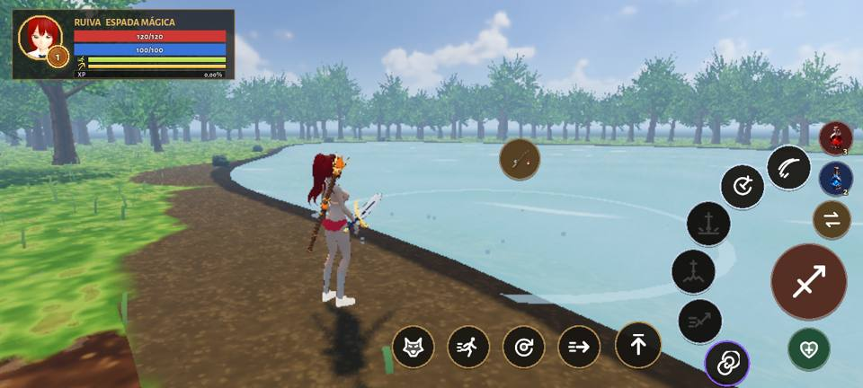
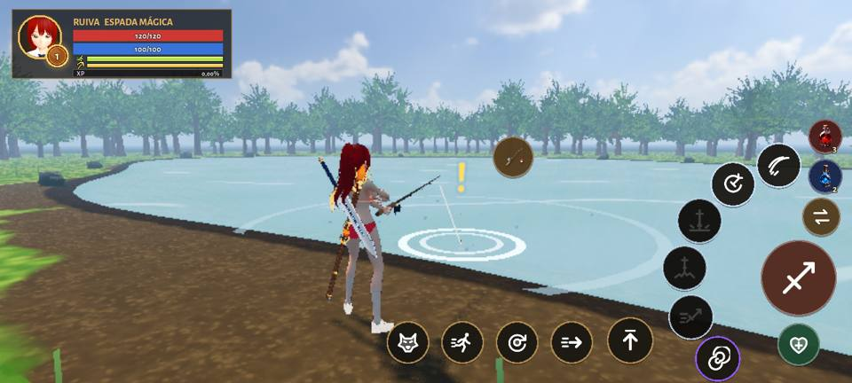
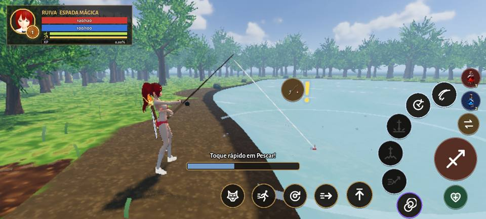
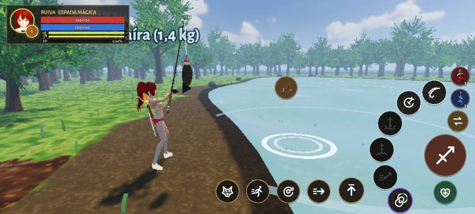
Spots e peixes
| Spot | Onde | Peixes |
|---|---|---|
| Comum azul claro | rio, lago e mar | Doce: lambari, tilápia, traíra · Mar: sardinha, robalo |
| Raro | mar | sardinha, robalo, garoupa, atum |
| Épico | mar (some e demora a voltar) | garoupa, atum, Peixe-Dourado |
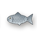
Lambari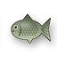
Tilápia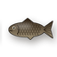
Traíra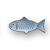
Sardinha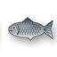
Robalo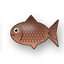
Garoupa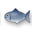
Atum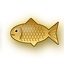
Dourado- Peixe maior gasta mais vigor (0,5 a 6) e briga mais.
- Radar de pesca (1 barra de cobre + 1 cristal, na bancada): use na mochila e todos os spots aparecem no mapa por 3 min. Não gasta.
- Peixe serve para comer, cozinhar, fazer pack e alimentar o clã. Atum e Dourado dão buff.
- Dá para pescar sentado no barquinho.
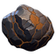
Coleta (minerar e lenha)- Ferramentas (menu Criar, sem bancada): Picareta (2 lenha, 3 pedra) e Machado (3 lenha, 2 pedra).
- Galho e pedra solta no chão: pega com a mão, sem vigor.
- Chegue perto do veio ou da árvore e toque no botão de ação.
| Fonte | Dá | Profissão |
|---|---|---|
| Veio de pedra | 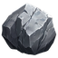 2 pedra | Minerador |
| Veio de cobre | 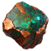 minério de cobre | Minerador |
| Veio de ferro | minério de ferro | Minerador Nv 5 |
| Veio de cristal | 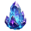 cristal | Minerador Nv 8 |
| Árvore | 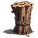 lenha (3 cortes, volta em 1 dia) | Lenhador |
Veio esgota e volta em 1,5 a 2,5 min. Às vezes sai cristal no ferro e no cobre.
Monstros (material)
- Lobo, Puglin, Maw: couro e carne.
- Imp: tecido (reforço e armadura).
- Golem: cristal.
- Todos: fragmento (às vezes), poção, peça e Tomo raros.
- Monstro mais de 5 níveis abaixo de você solta menos; fragmento, cristal, peça e Tomo somem com mais de 10 abaixo.
🔨 Criar (fornalha, bigorna, bancada)
Abra a mochila → aba Criar. Cada receita diz onde fazer. Gasta vigor e sobe a profissão (até Nv 20). Profissão alta = mais chance de sair peça de raridade melhor (no Nv 20: Épico 9%, Lendário 2,7%, Mítico 0,8%).
Fornalha (fundir)
Carvão e barras só saem da fornalha, não da aba Criar. A fornalha tem quatro lugares: Combustível, Material, Material 2 e Pronto. Ela queima sozinha, mesmo com você longe, e o fogo dela só fica aceso enquanto ela trabalha. Toque num lugar para selecioná-lo e toque de novo para devolver o item à bolsa; tocar num item da bolsa completa o lugar selecionado (até 50).
| Material (1) | Material 2 | Combustível | Sai |
|---|---|---|---|
| 3 minério de cobre | - | lenha ou carvão | barra de cobre |
| 2 lenha | - | lenha ou carvão | carvão |
| 3 minério de ferro | - | só carvão | barra de ferro |
| 1 barra de ferro | 2 carvão | só carvão | aço (Ferreiro Nv 5) |
Fogo: lenha dura 12 s e carvão 30 s. Do ferro em diante o fogo tem que ser de carvão. Cada aço gasta 3 carvões no total (2 no Material 2 e 1 no combustível).
Bigorna (Ferreiro)
- Espada: 3 barra de ferro, 2 lenha
- Cajado: 4 lenha, 1 barra de cobre, 1 cristal
- Capacete: 2 barra de ferro, 1 couro, 1 tecido
- Peitoral: 4 barra de ferro, 2 couro, 2 tecido
- Colar: 2 barra de cobre, 2 cristal, 1 tecido
Bancada (Alfaiate)
- Calça: 3 couro, 1 tecido · Short: 2 couro, 1 tecido
- Botas: 4 couro, 1 tecido · Capa: 4 tecido, 1 couro
- Também: regador, radar de pesca, galão, carrinho, barquinho, navio.
Algumas pedem nível do herói: bancada e bigorna Nv 3, fornalha 5, fogão 6, peitoral 8, colar 12, aço 15.
Bigorna, bancada e fornalha: toda vila tem na ferraria (na Clareira, a do Tomás e a bancada ao lado da Rosa). Também dá para construir no seu lote da base.
Comida e buffs
Construa um Fogão a lenha (8 pedra, 4 lenha, 1 barra de ferro) no seu lote da base (a vila não tem fogão). Perto dele, cozinhe pela aba Criar. Comida cura e dá buff (um por vez; morrer tira).
| Prato | Faz com | Buff |
|---|---|---|
| Carne assada | 1 carne | +5% dano, 10 min |
| Peixe assado | 2 lambari | +2% crítico, 10 min |
| Sopa de legumes | cenoura, batata, rabanete | +10% defesa, 10 min |
| Pão de milho | 2 milho | +20% volta da mana, 10 min |
| Ensopado | 2 carne, batata, tomate | +8% dano, +5% defesa, 15 min |
| Torta de abóbora | abóbora, milho | +3% crítico, +5% dano, 20 min |
Poção de vida (35%) e de mana (40%) na loja da Rosa; recarga de 10 s.
Horta e árvores
- Faça uma Enxada (3 lenha, 2 pedra) e um Regador (1 barra de cobre, 2 lenha, na bancada).
- Compre sementes com a comerciante (Rosa, na Clareira).
- No seu lote da base: arar → plantar → regar → colher. Encha o regador no poço ou na beira da água.
- Recruta com a ordem Fazenda cuida da horta da base.
- Com Plantar árvores ele planta até 10 mudas nas áreas de plantio e volta ao Livre. Para cortar, use Farmar recurso > Lenha.
Legumes: comer, cozinhar, packs e despensa do clã. Mudas de árvore se plantam nos bosques perto das vilas (até 10 mudas crescendo, igual para todos) e viram lenha.
🏠 Seu lote e construção
- Não se compra terreno. Funde o clã e a base: o lote 1 (10×10 m) é seu; os outros lotes vão para os membros.
- No lote, toque no martelo (topo da tela, aceso no seu lote) e escolha o que construir.
- Móveis: Bancada (6 lenha, 3 pedra), Bigorna (3 barra de ferro, 2 lenha), Fornalha (12 pedra, 2 lenha), Fogão (8 pedra, 4 lenha, 1 barra de ferro), Baú (10 lenha, 40 lugares, melhora até 80), Palete de packs (guarda packs sem sumir), Tocha, Cama e Cerca.
- Casa: fundação, paredes, porta, janela e telhado, de madeira ou pedra.
- Lote travado: a taxa do clã está 2 semanas atrasada.
🐉 Bosses de mundo e caverna
- Toda skill do boss avisa antes com marca vermelha no chão: role ou dê dash na hora.
- Com metade da vida ele entra em fúria (mais rápido e forte).
- Morto, volta em 4 a 5,5 h.
Drop: 2 a 4 poções, 1 peça Rara, 1 catalisador (Épico nos 2 primeiros, Lendário nos outros), chance de catalisador Mítico e 35% de Tomo.
| Boss | Nv | Onde | Mítico |
|---|---|---|---|
| Brasaferro (Golem) | 28 | Terras dos Golens | 5% |
| Uivo-Rei (Lobo) | 36 | Oeste de Vael | 8% |
| Mandíbula Velha | 42 | Norte de Vael | 10% |
| Chifre-de-Ferro | 48 | Leste de Vael | 12% |
| Colosso Gélido | 76 | Oeste de Aurora | 20% |
| Dragão de Cinzas | 92 | Leste de Aurora | 25% |
Caverna (dungeon)
Passe com o Guardião: 5 fragmento, 2 couro, 2 tecido (vale para o time). 3 salas: Galeria dos Golens (Nv 18), Poço dos Maws (Nv 20), Trono do Warrok (Nv 22). Monstros mais fortes e mais XP.
🗿 Totens, voltar para a vila e montaria
- Totem: passe perto (8 m) para descobrir. Depois, pelo mapa (Lugares, do mais perto ao mais longe) viaje para qualquer totem descoberto: 5 s parado, custa 10 × seu nível de ouro (mín. 50).
- Em volta do totem é área segura e regenera vida.
- Voltar para a vila (ícone da casinha): 8 s parado, recarga de 10 min.
- Montaria: o Lobo (anda 3, corre 9), liberado no nível 5. Não monta com pack nas costas nem em combate.
- Ir no mapa: anda sozinho até o lugar.
Loja, leilão e troca
Loja da Rosa
Toda vila tem uma comerciante (Rosa na Clareira). Poções, sementes e peças Comuns. Compra várias de uma vez (janela de quantidade, botão Máx). Vende o que você tem.
Leilão (Casa do Comércio)
- Com o Otávio, na Vila do Rio Claro. Um só para o mundo todo (jogadores e bots).
- Até 10 anúncios, por 24 ou 48 h. Taxa de 5% na venda.
- O ouro das vendas e o que venceu ficam com o Otávio: retire lá.
- Busca por parte do nome. No painel do clã dá para olhar o leilão (comprar só no jogo).
Troca entre jogadores
- Fique perto (6 m) e peça a troca.
- Cada um põe itens (até 12) e ouro e tranca o cadeado.
- Com os dois trancados, os dois confirmam. Mexeu em algo: destranca.
Guerra Chama × Geada
- Acima do Nv 30, fora da área segura, dá para lutar com a outra raça. Matar a Geada dá Fragmento de Alma (sobe o clã do Nv 4 em diante).
- Recruta com a ordem "Farmar recurso → Alma" caça a Geada por você.
- Pó de rastreio (2 cristal, 1 carvão, na bancada): por 5 min a outra raça aparece em vermelho no mapa.
- A Geada faz rondas e emboscadas nas estradas e pode roubar o seu pack. Cuidado levando pack.
- Arena PvP 4×4: partidas de 5 min, ganha Insígnias da Arena.
Patente de Guerra
Cada abate da outra raça no mundo (a Arena não conta) enche o anel do escudo ao lado da sua vida. Encheu, sobe de patente. O escudo aparece do lado do nome, em cima da cabeça (Recruta não mostra). Toque no escudo para ver quanto falta.
| Patente | Abates no mês | Prêmio no dia 1º |
|---|---|---|
| Soldado | 5 | 5 poções de vida |
| Cabo | 15 | 1 runa ou selo Raro |
| Sargento | 30 | 2 Raros |
| Tenente | 50 | 1 runa ou selo Épico |
| Capitão | 80 | 2 Épicos |
| Comandante | 120 | 1 Lendário |
| Lenda | 180 | 1 Mítico |
- Dia 1º (hora de Brasília) todo mundo volta a Recruta e ganha o prêmio da patente que pegou. Mochila cheia: o prêmio espera espaço.
- O título da maior patente que você já pegou fica para sempre (aba Títulos, grupo Guerra). Não dá bônus.
- Morrer para a outra raça no mundo tira 5% do anel, mas você nunca desce de patente (para em 0%). Morrer de novo para a mesma pessoa só tira de novo depois de 10 minutos. Na Lenda não tira.
- A mesma pessoa só conta de novo depois de 10 min. Quem é 10 níveis mais fraco não conta.
- O clã que mais abateu no mês ganha 1 runa ou selo Lendário no Baú do Clã. Placar no menu do clã e no painel ("Guerra do mês").
- Os bots sobem de patente igual; o prêmio deles vai para o Baú do Clã deles.